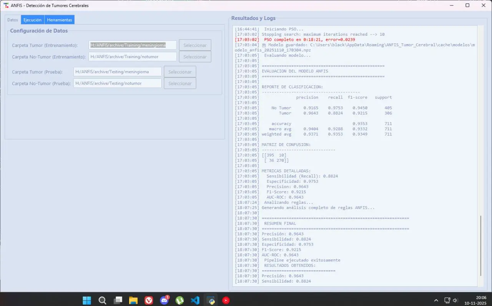
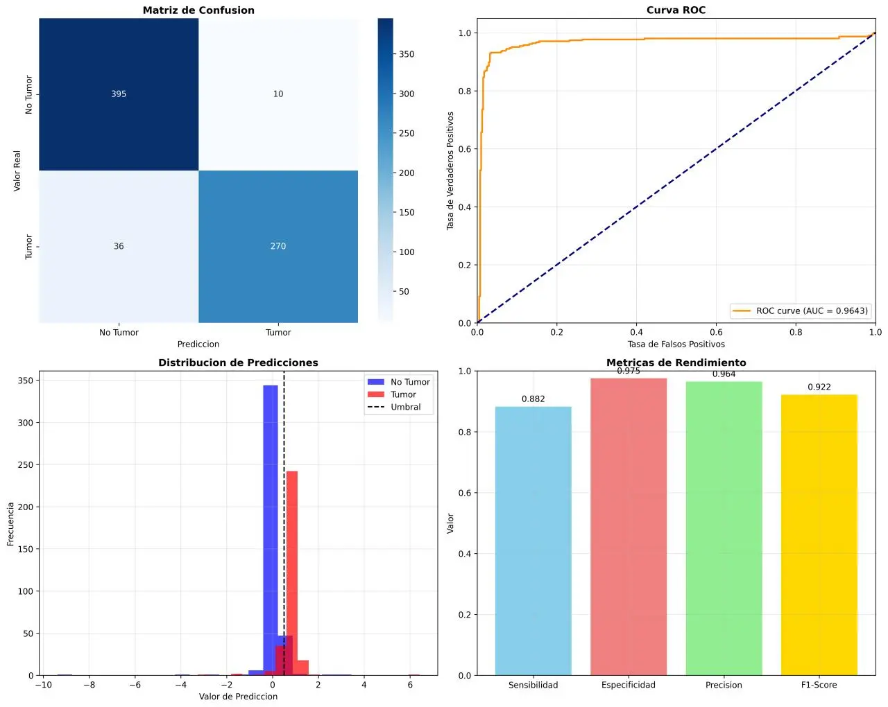

↻
Machine Learning
↗
ANFIS — Detección de Tumores Cerebrales
2023 — 2025 · Trabajo de TítuloClasificación binaria explicable de imágenes MRI mediante un sistema neuro-difuso ANFIS-Sugeno de 6 capas implementado desde cero y entrenado con PSO + mínimos cuadrados (LSE). Incluye preprocesamiento de imágenes, extracción de textura GLCM, capa de explicabilidad (XAI) y GUI de escritorio.
Ver repositorio →